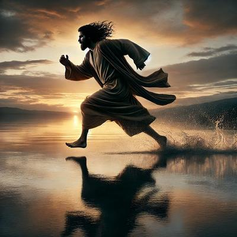

Entre los muchos relatos pintorescos de los evangelios, uno de los favoritos del imaginario cristiano es la célebre escena en que Jesús, según se afirma, «caminó sobre el agua». Pero ya veremos que no se trató de una simple caminata sobre las olas del mar, sino más bien de una carrera acuática nocturna sin precedentes, todavía más asombrosa que lo relatado por los evangelistas. Éstos se quedaron cortos al describirla.


Resulta que según «la palabra de Dios», después del prodigio de la multiplicación de cinco panes y dos peces crudos que realizó Jesús para alimentar a una multitud —y que merece una crítica racional aparte—, el Maestro ordenó a sus discípulos abordar la barca con que habían cruzado el Mar de Galilea (que es en realidad un lago de agua dulce alimentado por el río Jordán). Su intención era que ellos se adelantaran a Betsaida según Marcos 6:45, o a Cafarnaúm según Juan 6:17, que estaban en la otra orilla. Detalle curioso, por cierto: ni siquiera en la geografía se ponen de acuerdo; pero bueno, lo importante son los hechos portentosos que supuestamente prosiguen.
Mientras sus discípulos navegaban de regreso, Jesús se habría quedado despidiéndose de la multitud de sus seguidores (Marcos 6:45, Mateo 14:22), que según los evangelistas, eran cinco mil hombres, más las mujeres y los niños (Marcos 6:44, Mateo 14:21, Lucas 9:14). Y eso, por supuesto, le habría tomado bastante tiempo. Pero —como quien no tiene ninguna prisa—todavía después se fue a un monte cercano a orar (Marcos 6:46, Mateo 14:23). Los discípulos probablemente pensaron que su Maestro dispondría de otra barca, o que se iría caminando por la playa bordeando el mar de Galilea, como antes lo había hecho la multitud que los seguía.
En fin, dicen los evangelios que después de que los discípulos se fueron, al anochecer, la barca que los conducía ya se encontraba en medio del mar (o del lago), habiéndose quedado Jesús solo en aquel lugar (Marcos 6:47, Mateo 14:23). Sin embargo, desde donde estaba pudo verlos remar con mucho esfuerzo, porque el viento soplaba contra ellos (Marcos 6:48, Mateo 14:24). Juan evangelista comenta que a pesar de que ya estaba oscuro, Jesús todavía «no había venido a ellos» (Juan 6:17), como dando a entender que esperaban que los alcanzaría mientras todavía estuvieran remando. ¿Acaso haría aparecer alguna lancha a motor?… Pero hay otro detalle: si ya estaba oscuro y los discípulos ya iban lejos, Jesús tendría que haberlos visto sólo gracias a sus superpoderes (una visión telescópica nocturna).
Continúa diciendo Juan que de pronto el mar (o el lago) se encrespó, y comenzó a soplar un fuerte viento (Juan 6:18), cuando ya habían avanzado una distancia de unos 5 a 6 Km (25 a 30 estadios) (Juan 6:19). Sin embargo, a Jesús nada de eso parecía inmutarlo, porque entre despedirse de sus fans y hablar con «Dios» —con él mismo—, se le había ido el tiempo, y fue hasta la cuarta vigilia —entre las tres y las seis de la mañana— que por fin los alcanzó, e incluso «quería adelantárseles». Pero no lo hizo en otra barca, sino como dicen los evangelios, «andando sobre el mar» (Marcos 6:48, Mateo 14:25).
Ahora bien, si nos ponemos a analizar, aceptemos que Jesús llegó andando los últimos metros, pero para aproximarse hasta allí tuvo que haber corrido muy velozmente, porque si la ventaja mínima de la barca era de 5 kilómetros, tuvo que haberse desplazado a una velocidad que pondría en ridículo a cualquier velocista olímpico… y todavía llegó sin jadear ni sudar, ya que el evangelio no menciona siquiera una respiración agitada ni una gota de sudor. Además, para ubicar a sus discípulos en aquella oscuridad y a esa distancia, Jesús tendría que poseer algún sistema sensorial con una precisión similar al GPS.
Pero bueno, como Jesús es uno con «Dios» (Juan 10:30) esas son nimiedades. El caso es que cuando los discípulos lo vieron sobre la superficie del agua, pensaron que se trataba de un fantasma (ellos creían en eso), por lo que se pusieron a gritar de miedo (a pesar de que lo esperaban) (Marcos 6:49, Mateo 14:26, Juan 6:19). Pero Jesús muy sereno, les dijo que no temieran, y simplemente subió a la barca (Marcos 6:50-51, Juan 6:21). Fue entonces cuando según Marcos 6:51 y Mateo 14:32, el viento se calmó… Y uno se pregunta: si Jesús tenía el poder de calmar la tempestad con sólo desearlo, ¿por qué no lo hizo antes? ¡Ah! Seguramente para someter a prueba a sus discípulos.
Pero pasemos ahora del folclor religioso a la física real, esa disciplina ingrata que destruye fantasías y nos contacta con la realidad. ¿Por qué no era posible que Jesús—como cualquier otro humano — caminara sobre el agua? — Esto tiene una denominación técnica: densidad relativa y presión hidrostática. En español sencillo: un ser humano es mucho más denso que el agua, y la gravedad no hace concesiones teológicas. Cuando pones tu pie sobre el agua, la presión que ejerces supera por miles de veces la resistencia superficial del líquido, que se abre sin contemplaciones. Resultado: te hundes.
Para que un humano caminara sobre el agua tendría que ocurrir al menos una de estas tres condiciones:
Ser muchísimo menos denso que el agua —lo cual nos convertiría en globos inflados, no en mamíferos bípedos.
Ejercer una fuerza hacia abajo tan pequeña por unidad de área, que no rompa la tensión superficial —lo que exigiría pies que cubrieran varios metros cuadrados.
Aplicar una energía cinética brutal en cada paso, golpeando el agua con tal rapidez que no le dé tiempo de abrirse, formando brevemente una superficie semisólida.
Y los humanos sencillamente no podemos cumplir ninguno de estos requisitos… Pero otros animales sí. Entre ellos tenemos por ejemplo a los «insectos zapateros», los verdaderos caminantes sobre el agua. Nos referimos a los Gerridae, esos delicados bichos así llamados, zapateros, que sí pueden caminar sobre el agua. ¿Cuál es su secreto? Que existe, como dijimos, lo que se conoce como tensión superficial. Esa propiedad del agua que hace que sus moléculas se atraigan entre sí como si formaran una película elástica. Y para la mayoría de animales esa película es muy insignificante, rompiéndola con gran facilidad; pero para un insecto que pesa milésimas de gramo, es una como alfombra maravillosa.
Además, sus patas están cubiertas por pelos hidrófobos, es decir, que repelen el agua, y distribuyen su peso tan eficientemente que no rompen la superficie. Así que ellos sí pueden flotar, deslizarse y moverse con elegancia, como verdaderas criaturas «milagrosas», sin que nadie les haya elaborado un relato fantástico ni teológico.
Por otra parte tenemos a los basiliscos, apodados curiosamente «lagartos de Jesucristo», unas lagartijas americanas que sí pueden correr unos metros sobre el agua. Pero no como prueba de poderes milagrosos, sino gracias a la física del impacto: sus patas tienen lóbulos dérmicos que se abren como aletas cuando golpean el agua. Y al correr a gran velocidad, cada zancada genera una cavidad en el agua antes de hundirse, permitiendo que el siguiente paso llegue antes de que el cuerpo se hunda por completo. Es, pues, un truco evolutivo brillante y perfectamente explicable. Pero el basilisco no camina serenamente sobre las olas, corre desesperado para no hundirse. Como tendría que haberlo hecho Jesús, pero sin unos pies que actuaran como aletas que se abrieran al golpear el agua.
Así que, digamos que poner a un ser humano a caminar sobre el agua puede ser una idea fantástica permitida en cualquier obra de ficción; o puede ser, si quieres, un «relato metafórico», pero no físico, nunca real. Por tanto, la narración evangélica funciona muy bien como cuento edificante, como metáfora, o como anécdota literaria para impresionar a lectores de un mundo precientífico; pero desde el punto de vista de la física (esa ciencia que insiste en describir la realidad tal como es), un humano caminando sobre el agua es tan absurdo como detener una tormenta con un deseo, o localizar una barca en la oscuridad de la noche a kilómetros de distancia sin una señal satelital.
En el caso de los insectos zapateros y los basiliscos, se puede explicar su comportamiento mediante leyes naturales comprensibles. La anécdota sobre Jesús en cambio, requeriría contravenir varias leyes naturales simultáneamente. Y si un relato necesita romper la física del universo para sostenerse, es sencillamente porque pertenece al campo de los mitos, no de los hechos.
[Godless Freeman]
Comentarios
Comments powered by Disqus